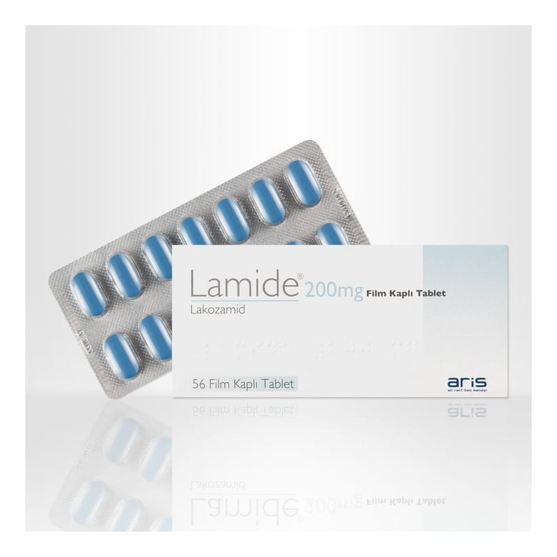

Lamide 200 mg Film Kaplı Tablet, 56 Adet

Ne için kullanılır
KT · Bölüm 1. LAMİDE, lakozamid adı verilen etkin maddeyi içeren ve epilepsi (tutarık) adı verilen hastalığın tedavisinde kullanılan bir ilaçtır. * LAMİDE, mavi renkli, modifiye oblong, bikonveks film kaplı tabletlerdir. . 56 film kaplı tablet içeren blister ambalajda takdim edilmektedir. . LAMİDE, epilepsinin (tutarık) belirli bir formunu (aşağıya bakınız) tedavi etmek için 16 yaş ve üstü hastalarda tek başına ya da diğer epilepsi ilaçlarına ek olarak kullanılan bir ilaçtır.
. Epilepsi, hastaların tekrarlayan nöbetler gösterdiği bir durumdur.
.* LAMİDE, 16 yaş ve üstü hastalarda nöbetlerin başlangıçta sadece beynin bir tarafını etkilediği, fakat daha sonra beynin her iki tarafında da daha büyük alanlara yayıldığı veya yayılmadığı (ikincil jeneralize olan veya olmayan parsiyel başlangıçlı nöbet) bir epilepsi formunun tedavisinde tek başına ya da diğer epilepsi ilaçlarına ek olarak kullanılır.
Bu belge, güvenli elektronik imza ile imzalanmıştır Belge Doğrulama Kodu: IZW56ZW56YnUyO3NR YnUyZW56MOFyZW56 Belge Takip Adresi:https://www.turkiye.gov.tr/saglik-titck-ebys